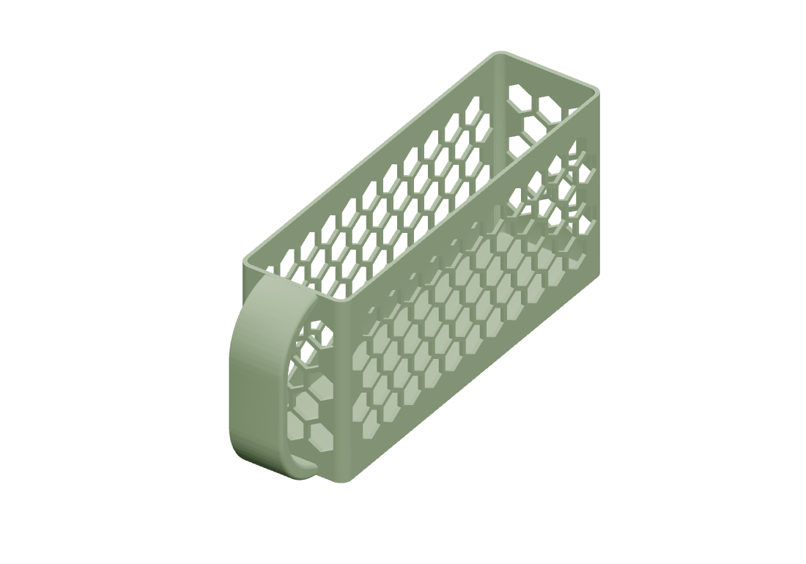

Kitchen shelf baskets
Basket sizes

About this print
Print one narrow replacement beside two already-printed original baskets. The original baskets are 74 mm wide outside; this replacement is 59 mm outside (55 mm inside). Together they use 207 mm, leaving 8.86 mm total clearance. Inner depth stays 203 mm and the handles project in front. Physical fit has not yet been tested.